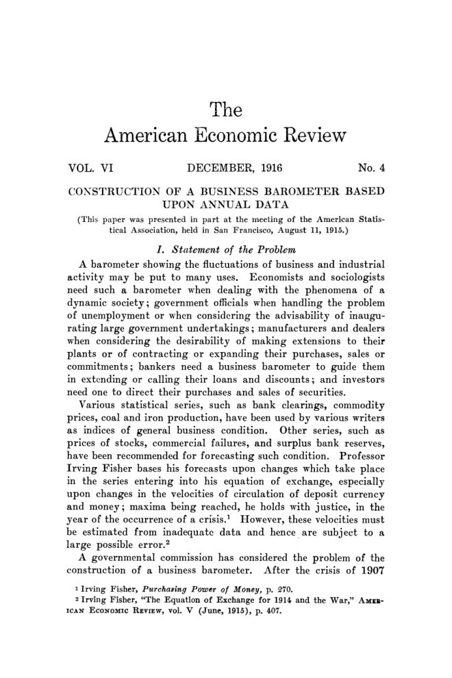

Persons, 1916: como montar um barômetro dos negócios
Leitura: 8 min
Warren M. Persons usa séries anuais americanas de 1879 a 1913 para separar as que se movem com os preços, que formam um barômetro dos negócios, das que se adiantam a eles e servem para prever.


Numa carta de 7 de outubro de 1915, Babson explicou a Warren M. Persons como traçava sua linha de crescimento normal dos negócios. Partia de um ciclo completo, desenhava uma linha que deixasse áreas iguais acima e abaixo dela e a prolongava ano a ano conforme as compensações bancárias, reservando-se o direito de corrigi-la no fim de cada ciclo. A lei de ação e reação não era demonstrada pelos gráficos: era suposta para construí-los.
Persons, da Harvard University, cita a carta no artigo que abre o número de dezembro de 1916 da American Economic Review, apresentado em parte na reunião da American Statistical Association em San Francisco, em 11 de agosto de 1915. O problema que propõe é duplo: que séries estatísticas devem ser combinadas num barômetro da situação geral dos negócios nos Estados Unidos e que séries variam antes desse barômetro e servem de base para previsões.
Por que os barômetros comerciais não bastavam?
O artigo começa por quem já tentara. Depois da crise de 1907, uma comissão francesa de 44 membros buscou sinais que revelassem a depressão próxima, para que o governo acelerasse obras públicas nos períodos de baixa. Recomendou oito índices, da carteira comercial e das reservas do Banco da França ao consumo de carvão, ao tráfego ferroviário e ao desemprego, e comparou suas datas de máximos e mínimos com as das crises. Não construiu um índice composto.
Nos Estados Unidos, os serviços de Babson e de Brookmire vendiam a empresários, banqueiros e investidores barômetros feitos de médias de muitas séries. Brookmire combinava compensações bancárias, receitas ferroviárias, produção e preço do ferro-gusa, preços, importações, construção e imigração, e eliminava o crescimento subtraindo o aumento médio dos dez anos anteriores. M. T. Copeland propunha dividir o número de cada mês pela média do mesmo mês nos dez anos anteriores. Babson não eliminava a tendência antes de somar as séries.
As críticas de Persons são três. As séries eram heterogêneas e escolhidas sem análise científica; o método de eliminar a tendência não era satisfatório; e ninguém podia conferir os resultados. O método de dez anos tinha ainda um defeito lógico: ao supor ciclos de dez anos, presumia o que se queria descobrir. Persons faz questão de dizer que os dois serviços prestavam um serviço valioso ao divulgar as estatísticas fundamentais.
“Não me oponho ao uso de uma variedade de séries estatísticas, mas ao seu uso ingênuo ou empírico.” (“not to the use of a variety of ... statistical series ... but rather to their use in a naïve or rule-of-thumb manner”)
Como separar a tendência do ciclo?
Persons escolhe o período de 1879 a 1913 pela relativa homogeneidade: o país esteve todo no padrão-ouro, com preços em queda até 1896 e em alta a partir de 1897, e houve várias fases de prosperidade e depressão. Examina 25 séries anuais, de preços e produção a ações negociadas, falências, reservas bancárias e taxas de juros, estas só para 1890–1911.
Para ele, a tendência normal deve ser uma linha ou curva suave, determinada pelos próprios dados, como os movimentos seculares graduais de que falava Marshall. Ajusta uma reta aos preços por dois métodos, os momentos e os mínimos quadrados, que deram o mesmo resultado, e usa uma curva de juros compostos para as compensações bancárias. Os ciclos são os desvios de cada ano em relação a essa linha; as primeiras diferenças, a variação dos ciclos de um ano para o outro.
O padrão de comparação são os preços no atacado, série que combina o índice do Aldrich Report e o do Bureau of Labor Statistics. A escolha se apoia num consenso: Juglar definia a crise como a parada da alta dos preços, Mitchell e Aftalion organizavam suas explicações em torno dos preços, e Veblen os tratava como fenômenos de perturbação dos preços. Para cada série, Persons calcula o coeficiente de correlação de Pearson com os preços, no mesmo ano e com defasagens, e procura onde ele chega ao máximo.
O que as compensações bancárias revelaram?
A primeira série examinada mostra o método em funcionamento. Seguindo Irving Fisher, Persons soma às compensações de Nova York cinco vezes as das demais cidades. A correlação com os preços é mais alta quando as compensações de um ano são comparadas aos preços do ano seguinte. Para tirar o efeito do próprio nível de preços, ele divide as compensações pelo índice de preços: a correlação passa a ser de +0,715 no mesmo ano, +0,852 com um ano de defasagem e +0,749 com dois.
As primeiras diferenças confirmam: +0,039 no mesmo ano, +0,661 com um ano de defasagem e –0,030 com dois. As compensações se movem cerca de um ano antes dos preços. Como Babson e Brookmire somavam as duas séries, misturavam um indicador que antecipa com outro que acompanha.
Como se monta o barômetro?
Aplicado a todas as séries, o método as separa em três grupos: as que flutuam com os preços, as que se adiantam e as que se atrasam ou não mostram relação clara. Entram no barômetro as nove do primeiro grupo: preços no atacado, receita bruta e lucro líquido das ferrovias, produção de carvão, exportações, importações, produção e preço do ferro-gusa e imigração. Em todas, menos nas importações, os coeficientes crescem gradualmente até o ano corrente e depois caem; as primeiras diferenças das importações confirmam que elas também acompanham os preços.
Para que séries de oscilação ampla e estreita pesem o mesmo, cada uma é dividida por seu próprio desvio-padrão antes da média. Quatro das nove são séries de preço; a média das outras cinco acompanha de perto os preços. As correlações de cada série com o barômetro resultante vão de +0,785 a +0,951 nos ciclos e de +0,516 a +0,847 nas primeiras diferenças, com uma pequena correlação espúria, porque cada série faz parte do índice.
O previsor funciona?
As séries que se adiantam formam o previsor de um ano: ações vendidas na Bolsa de Nova York e seu preço médio, compensações corrigidas, nova quilometragem ferroviária e percentual de falências, este com o sinal invertido. A média das cinco tem correlação de +0,860 com o barômetro nos ciclos e de +0,510 nas primeiras diferenças.
“Na previsão, as primeiras diferenças têm mais significado que os ciclos.” (“In forecasting, the first differences are of greater significance than the cycles.”)
O teste é simples. Persons tabula os sinais das primeiras diferenças de três séries, ações vendidas, preço das ações e compensações corrigidas, e toma dois ou três sinais iguais como previsão da direção do barômetro no ano seguinte. Obtém 25 acertos e 9 erros. Em sete dos nove erros, os sinais coincidiam com o barômetro do mesmo ano, o que sugere uma antecedência de nove ou dez meses, e não de um ano inteiro. Numa nota, ele informa que um estudo com dados trimestrais já encontrara séries que se adiantam de três a nove meses.
Há ainda dois resultados laterais. A produtividade das nove principais lavouras, em médias de três anos, tem correlação de +0,655 com o barômetro quatro anos depois, perto dos +0,800 que Henry L. Moore encontrara com os preços; Persons adverte que correlações de médias trienais são difíceis de interpretar. E o método das diferenças variadas, publicado por “Student” na Biometrika em 1914 e assim batizado por Karl Pearson, confirma a seleção das séries, com dúvida apenas sobre as exportações.
“É necessária nova investigação baseada em dados trimestrais ou mensais.” (“Further investigation based upon quarterly or monthly data is necessary”)
Na minha leitura
Na minha leitura, a contribuição de Persons está menos no barômetro em si do que na regra de classificação. Uma série entra no índice se se move junto com a referência; vai para o previsor se se adianta a ela. Somar as duas coisas, como faziam os serviços comerciais, apaga justamente a informação que interessa a quem quer prever. É a distinção, hoje corrente, entre indicadores coincidentes e antecedentes, feita aqui com uma tabela de correlações defasadas.
O cuidado com a tendência pesa tanto quanto a correlação. Ao recusar médias móveis de dez anos, Persons evita impor aos dados a duração do ciclo; ao padronizar cada série pelo desvio-padrão, evita que as mais voláteis dominem o índice; ao conferir tudo com as primeiras diferenças, protege-se da correlação espúria entre séries que apenas crescem juntas. O próprio teste de sinais, com 25 acertos em 34, indica o limite do material anual e aponta para os dados trimestrais.
Glossário
- Barômetro dos negócios
- índice composto que resume a situação geral da atividade econômica.
- Tendência secular
- linha suave que representa o crescimento de longo prazo de uma série.
- Ciclo
- desvio de cada ano em relação à tendência secular.
- Primeira diferença
- variação de uma série de um ano para o seguinte.
- Coeficiente de correlação de Pearson
- medida de –1 a +1 da associação linear entre duas séries.
- Defasagem
- comparação de uma série com os valores de outra em anos anteriores ou posteriores.
- Desvio-padrão
- medida da dispersão de uma série em torno de sua média.
- Método das diferenças variadas
- correlação entre diferenças sucessivas de ordem crescente para eliminar o efeito do tempo.
Fontes
- Construction of a Business Barometer Based upon Annual Data — Warren M. Persons (Harvard University) (pp. 739–769). JSTOR · Internet Archive (PDF)
- Edição completa, com os demais artigos: Nº 144 do Arquivo.
Documento em domínio público (EUA, publicado antes de 1931), via JSTOR Early Journal Content e Internet Archive. Resumo e comentário do autor deste site, sem afiliação com a American Economic Association. Encontrou um erro? Escreva: a correção é publicada no próprio texto, com data.
↑ Nº 144 · Um barômetro dos negócios, a capitalização do imposto e o crédito rural Seligman, 1916: o comprador de um bem tributado paga o imposto? →